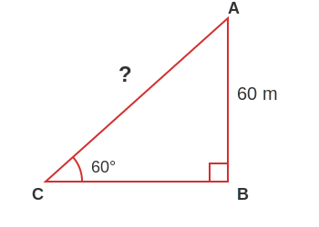
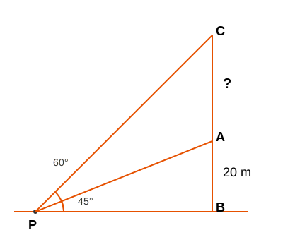
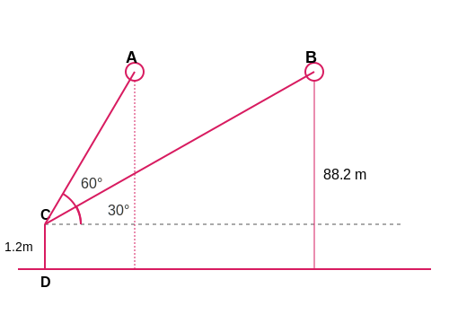
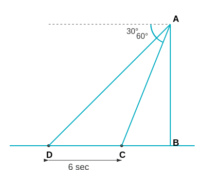

1. A circus artist is climbing a 20 m long rope, which is tightly stretched and tied from
the top of a vertical pole to the ground. Find the height of the pole, if the angle made by the rope with
the ground level is 30°.

Let AB be the height of the pole (\(h\)) and AC be the rope (20 m).
In right \(\triangle ABC\), \(\sin 30^\circ = \frac{AB}{AC}\).
We know \(\sin 30^\circ = \frac{1}{2}\)
\(\frac{1}{2} = \frac{h}{20}\)
\(2h = 20 \Rightarrow h = 10\)
Therefore, the required value is 10 m.
2. A tree breaks due to storm and the broken part bends so that the top of the tree
touches the ground making an angle 30° with it. The distance between the foot of the tree to the point where
the top touches the ground is 8 m. Find the height of the tree.

Let the broken part be AC and the standing part be BC.
Total height of tree = BC + AC.
Given distance AB = 8 m and angle \(\theta = 30^\circ\).
In \(\triangle ABC\):
\(\tan 30^\circ = \frac{BC}{AB} \Rightarrow \frac{1}{\sqrt{3}} = \frac{BC}{8} \Rightarrow BC =
\frac{8}{\sqrt{3}}\)
\(\cos 30^\circ = \frac{AB}{AC} \Rightarrow \frac{\sqrt{3}}{2} = \frac{8}{AC} \Rightarrow AC =
\frac{16}{\sqrt{3}}\)
Total height = \(BC + AC = \frac{8}{\sqrt{3}} + \frac{16}{\sqrt{3}}\)
\(= \frac{24}{\sqrt{3}}\)
Rationalizing: \(\frac{24\sqrt{3}}{3} = 8\sqrt{3}\)
Therefore, the required value is \(8\sqrt{3}\) m.
3. A contractor plans to install two slides... (height 1.5m @ 30° and height 3m @ 60°).
What should be the length of the slide in each case?

Case 1: For younger children. Height \(h_1 = 1.5\) m, Angle = 30°. Let length be \(l_1\).
\(\sin 30^\circ = \frac{h_1}{l_1} \Rightarrow \frac{1}{2} = \frac{1.5}{l_1}\)
\(l_1 = 1.5 \times 2 = 3\) m.
Case 2: For elder children. Height \(h_2 = 3\) m, Angle = 60°. Let length be \(l_2\).
\(\sin 60^\circ = \frac{h_2}{l_2} \Rightarrow \frac{\sqrt{3}}{2} = \frac{3}{l_2}\)
\(l_2\sqrt{3} = 6 \Rightarrow l_2 = \frac{6}{\sqrt{3}}\)
Rationalizing: \(l_2 = \frac{6\sqrt{3}}{3} = 2\sqrt{3}\) m.
Therefore, the required value is 3 m and \(2\sqrt{3}\) m.
4. The angle of elevation of the top of a tower from a point on the ground, which is 30 m
away from the foot of the tower, is 30°. Find the height of the tower.

Let height of tower be \(h\). Distance = 30 m. Angle = 30°.
\(\tan 30^\circ = \frac{h}{30}\)
\(\frac{1}{\sqrt{3}} = \frac{h}{30}\)
\(h = \frac{30}{\sqrt{3}}\)
Rationalizing: \(h = \frac{30\sqrt{3}}{3} = 10\sqrt{3}\)
Therefore, the required value is \(10\sqrt{3}\) m.
5. A kite is flying at a height of 60 m above the ground... inclination ... is 60°. Find
the length of the string...

Height = 60 m. Angle = 60°. Let length of string be \(L\).
\(\sin 60^\circ = \frac{60}{L}\)
\(\frac{\sqrt{3}}{2} = \frac{60}{L}\)
\(L\sqrt{3} = 120 \Rightarrow L = \frac{120}{\sqrt{3}}\)
Rationalizing: \(L = \frac{120\sqrt{3}}{3} = 40\sqrt{3}\)
Therefore, the required value is \(40\sqrt{3}\) m.
6. A 1.5 m tall boy is standing... angle of elevation... increases from 30° to 60°... Find
distance walked.

Height of building = 30 m. Boy = 1.5 m.
Effective height \(h = 30 - 1.5 = 28.5\) m.
In first position (Angle 30°), let horizontal distance be \(x\).
\(\tan 30^\circ = \frac{28.5}{x} \Rightarrow \frac{1}{\sqrt{3}} = \frac{28.5}{x} \Rightarrow x
= 28.5\sqrt{3}\).
In second position (Angle 60°), let horizontal distance be \(y\).
\(\tan 60^\circ = \frac{28.5}{y} \Rightarrow \sqrt{3} = \frac{28.5}{y} \Rightarrow y =
\frac{28.5}{\sqrt{3}}\).
Distance walked = \(x - y\)
\(= 28.5\sqrt{3} - \frac{28.5}{\sqrt{3}}\)
\(= 28.5 (\frac{3 - 1}{\sqrt{3}}) = 28.5 (\frac{2}{\sqrt{3}})\)
\(= \frac{57}{\sqrt{3}} = \frac{57\sqrt{3}}{3} = 19\sqrt{3}\)
Therefore, the required value is \(19\sqrt{3}\) m.
7. From a point on the ground, the angles of elevation of the bottom and the top of a
transmission tower fixed at the top of a 20 m high building are 45° and 60° respectively. Find the height of
the tower.

Let building height AB = 20 m. Tower height BC = \(h\). Let point P be at distance \(x\).
For bottom of tower (Angle 45°):
\(\tan 45^\circ = \frac{AB}{x} \Rightarrow 1 = \frac{20}{x} \Rightarrow x = 20\) m.
For top of tower (Angle 60°):
\(\tan 60^\circ = \frac{AB + BC}{x} \Rightarrow \sqrt{3} = \frac{20 + h}{20}\)
\(20\sqrt{3} = 20 + h\)
\(h = 20\sqrt{3} - 20 = 20(\sqrt{3} - 1)\)
Therefore, the required value is \(20(\sqrt{3} - 1)\) m.
8. A statue, 1.6 m tall, stands on the top of a pedestal... Top of statue is 60°... top of
pedestal is 45°. Find height of pedestal.

Let pedestal height be \(h\) and horizontal distance be \(x\). Statue = 1.6 m.
For top of pedestal (Angle 45°):
\(\tan 45^\circ = \frac{h}{x} \Rightarrow 1 = \frac{h}{x} \Rightarrow x = h\).
For top of statue (Angle 60°):
\(\tan 60^\circ = \frac{h + 1.6}{x}\)
\(\sqrt{3} = \frac{h + 1.6}{h}\) (since \(x=h\))
\(h\sqrt{3} = h + 1.6\)
\(h(\sqrt{3} - 1) = 1.6\)
\(h = \frac{1.6}{\sqrt{3} - 1}\)
Rationalizing: \(h = \frac{1.6(\sqrt{3} + 1)}{3 - 1} = \frac{1.6(\sqrt{3} + 1)}{2} =
0.8(\sqrt{3} + 1)\).
Therefore, the required value is \(0.8(\sqrt{3} + 1)\) m.
9. The angle of elevation of the top of a building from the foot of the tower is 30°...
tower from foot of building is 60°. Tower is 50 m. Find building height.

Tower height = 50 m. Let distance between feet be \(x\). Building height \(h\).
From building foot to tower top (60°):
\(\tan 60^\circ = \frac{50}{x} \Rightarrow \sqrt{3} = \frac{50}{x} \Rightarrow x =
\frac{50}{\sqrt{3}}\).
From tower foot to building top (30°):
\(\tan 30^\circ = \frac{h}{x} \Rightarrow \frac{1}{\sqrt{3}} = \frac{h}{x}\)
\(h = \frac{x}{\sqrt{3}} = \frac{50/\sqrt{3}}{\sqrt{3}} = \frac{50}{3}\)
Therefore, the required value is \(16\frac{2}{3}\) m.
10. Two poles of equal heights... road 80 m wide... angles 60° and 30°. Find height and
distances.

Let height of poles be \(h\). Let point be at distance \(x\) from first pole so \((80-x)\)
from second.
First pole (Angle 60°): \(\tan 60^\circ = \frac{h}{x} \Rightarrow h = x\sqrt{3}\).
Second pole (Angle 30°): \(\tan 30^\circ = \frac{h}{80 - x} \Rightarrow \frac{1}{\sqrt{3}} =
\frac{h}{80 - x} \Rightarrow h = \frac{80 - x}{\sqrt{3}}\).
Equating \(h\):
\(x\sqrt{3} = \frac{80 - x}{\sqrt{3}}\)
\(3x = 80 - x \Rightarrow 4x = 80 \Rightarrow x = 20\).
Distances are 20 m and 60 m.
Height \(h = 20\sqrt{3}\).
Therefore, the required value is Height: \(20\sqrt{3}\) m; Distances: 20 m, 60 m.
11. A TV tower... 60°... 20 m away... 30°. Find height and width.

Let height be \(h\) and width of canal be \(x\).
First point (60°): \(\tan 60^\circ = \frac{h}{x} \Rightarrow h = x\sqrt{3}\).
Second point (30°) at distance \((x+20)\):
\(\tan 30^\circ = \frac{h}{x+20} \Rightarrow \frac{1}{\sqrt{3}} = \frac{h}{x+20} \Rightarrow
h\sqrt{3} = x+20\).
Substitute \(h = x\sqrt{3}\):
\((x\sqrt{3})\sqrt{3} = x+20 \Rightarrow 3x = x+20\)
\(2x = 20 \Rightarrow x = 10\) m.
Height \(h = 10\sqrt{3}\) m.
Therefore, the required value is Height: \(10\sqrt{3}\) m; Width: 10 m.
12. From top of 7 m building... elevation 60°... depression 45°. Find height of tower.

Building height \(AB = 7\) m. Let tower be CD.
Draw horizontal line from top of building A to tower at E.
Angle of depression of foot is 45° \(\Rightarrow\) Angle of elevation from foot to top of
building is 45°.
\(\tan 45^\circ = \frac{7}{\text{distance}} \Rightarrow \text{distance} = 7\) m. So \(AE = 7\)
m.
For top of tower (Angle 60°): In \(\triangle AEC\), \(\tan 60^\circ = \frac{CE}{AE}\).
\(\sqrt{3} = \frac{CE}{7} \Rightarrow CE = 7\sqrt{3}\).
Total height \(CD = CE + ED = 7\sqrt{3} + 7\) (since \(ED = AB = 7\)).
\(CD = 7(\sqrt{3} + 1)\).
Therefore, the required value is \(7(\sqrt{3} + 1)\) m.
13. As observed from top of 75 m lighthouse... depressions 30° and 45°. Find distance
between ships.

Height \(h = 75\) m. Let ships be at distances \(y\) (near) and \(x\) (far).
Near ship (Angle 45°): \(\tan 45^\circ = \frac{75}{y} \Rightarrow 1 = \frac{75}{y} \Rightarrow
y = 75\) m.
Far ship (Angle 30°): \(\tan 30^\circ = \frac{75}{x} \Rightarrow \frac{1}{\sqrt{3}} =
\frac{75}{x} \Rightarrow x = 75\sqrt{3}\) m.
Distance between ships = \(x - y\)
\(= 75\sqrt{3} - 75 = 75(\sqrt{3} - 1)\).
Therefore, the required value is \(75(\sqrt{3} - 1)\) m.
14. A 1.2 m tall girl spots a balloon... height 88.2 m... angle reduces 60° to 30°. Find
distance travelled.
here]

Balloon height from ground = 88.2 m. Girl height = 1.2 m.
Effective height \(h = 88.2 - 1.2 = 87\) m.
Position 1 (Angle 60°): Let horizontal distance be \(x\).
\(\tan 60^\circ = \frac{87}{x} \Rightarrow \sqrt{3} = \frac{87}{x} \Rightarrow x =
\frac{87}{\sqrt{3}} = 29\sqrt{3}\).
Position 2 (Angle 30°): Let horizontal distance be \(y\).
\(\tan 30^\circ = \frac{87}{y} \Rightarrow \frac{1}{\sqrt{3}} = \frac{87}{y} \Rightarrow y =
87\sqrt{3}\).
Distance travelled = \(y - x\)
\(= 87\sqrt{3} - 29\sqrt{3} = 58\sqrt{3}\).
Therefore, the required value is \(58\sqrt{3}\) m.
15. A straight highway leads to foot of tower... car at 30°... 6 seconds later 60°. Find
time taken.

Let height be \(h\). Distances \(x\) (at 30°) and \(y\) (at 60°).
At 60°: \(\tan 60^\circ = \frac{h}{y} \Rightarrow h = y\sqrt{3}\).
At 30°: \(\tan 30^\circ = \frac{h}{x} \Rightarrow h = \frac{x}{\sqrt{3}}\).
Equating \(h\): \(\frac{x}{\sqrt{3}} = y\sqrt{3} \Rightarrow x = 3y\).
Distance travelled in 6 seconds = \(x - y = 3y - y = 2y\).
Time to cover distance \(2y\) is 6 seconds.
Time to cover distance \(y\) is \(\frac{6}{2} = 3\) seconds.
Therefore, the required value is 3 seconds.